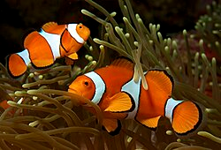

Style guide: Sea life
Colours
WCAG AA: normal text needs at least 4.5 : 1, large text and UI parts at least 3 : 1.
-
--color-text-dark#0b1f2e
Role: text on light backgrounds
On sunlight: 14.2 : 1 -
--color-text-light#e8f1f8
Role: text on dark backgrounds
On twilight: 7.6 : 1 · on midnight: 15.3 : 1 -
--color-sunlight#ed9953
Role: page background, sunlight zone -
--color-twilight#043f77
Role: brand colour, twilight zone -
--color-midnight#0d0c08
Role: surface for header and footer, midnight zone
Highlights (focus ring, selected text) use the browser's default colours. Hover and the current page are shown with an underline, not with a colour.
Typography
Font: system-ui, the system font of each device. It loads instantly (no download), is easy to read on screens and looks familiar to every visitor.
Headings are fluid with clamp(): they grow with the screen width, between a minimum and a maximum size.
Heading 1 · --step-3
Heading 2 · --step-2
Heading 3 · --step-1
Body text · --step-0 (1rem). Paragraphs are at most --measure (65ch) wide, so lines stay easy to read.
Spacing
--space-1 0.25rem · --space-2 0.5rem · --space-3 1rem · --space-4 2rem · --space-5 4rem. Only these values are used for margins, paddings and gaps.
Border
--border: var(--border-width) solid currentColor with --border-width 0.125rem. currentColor means the border takes the text colour: dark on light backgrounds, light on dark ones. No rounded corners.
Components
1 · Site navigation
See the header at the top of this page. Stacked on mobile, in a row from 40rem.
States: default (no underline), hover (underline), Tab for focus-visible (browser focus ring), current page (bold and underlined, set with aria-current="page").
2 · Button
No border, always underlined so it is clearly clickable. States: default (underline), hover (thicker underline), Tab for focus-visible (browser focus ring), disabled (faded). Used for "Back to top".
3 · Species

Clownfish
Amphiprion ocellaris
Photo on top, then name, scientific name (italic) and one fun fact.
Breakpoints
Mobile first: the default styles are for small screens, media queries add the bigger layouts.
| Breakpoint | What changes | Why there |
|---|---|---|
| below 40rem | one column, nav stacked | phones: everything one under the other |
| 40rem | nav in a row, two species side by side | from here two photos are still big enough to see well |
| 64rem | zone heading on the left, species on the right | from here there is room for a heading column next to two photos |
The text pages (About, Sources) stay one column at every width; only the nav changes. Their text and lists are at most 65ch wide.